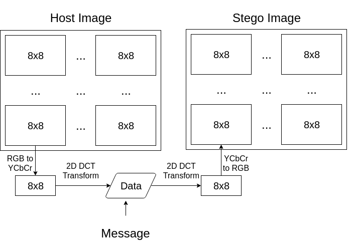

This project is a fork of Jeffery Zhaos's
CryptoStego project, which implements well known
steganographic methods and cryptography to hide and protect text in images.
This fork implements a new steganographic method, inspired by the YASS method.
The implementd method consists of hiding the data inside the 2D Discrete Cosine Transform
results of pseudo-randomly spatially located 8x8 blocks of the image. More info on the method
is available at the About section below.
Note that the same parameters used to hide a message must be used to recover it!
This project uses the CryptoStego framework/library created by Jeffery Zhaos to implement a new steganographic method, greatly inspired by the YASS method, which proposed in 2007 in the article:
Solanki, K & Sarkar, Anindya & Manjunath, B. (2007). YASS: Yet Another Steganographic Scheme That Resists Blind Steganalysis. Lect Notes Comput Sci. 2939. 16-31. 10.1007/978-3-540-77370-2_2.
If you have interest in this subject, I highly suggest you to take a look at the article, as this implementation is not really faithful to the article proposal. The following images show the basic idea behind the steganographic methos in this project, the first beeing the standard 2D DCT data hiding and the second the new method. Both hide the data changing the lowest frequency component of each block, resulting in distorted images.
As mentioned, both methods generate distorted images. Below are some comparisons of the results obtained by each method, using the robustness level 0, described at the Parameters section.
The generated distortion is clear for both cases, as it is usual for frequency Transform methods used for image and video compression. For the second image, we can also see the many smaller 8x8 blocks inside the BxB blocks. By varying the robustness level, we can get quite distinct results.
We can also decrease the B size paramenter, i.e., the outer block size. It can only be as small as 8, in which case the method becomes the same as the usual DCT steganographic method. As B increases, so does the hiding capacity, as the message is only written inside the 8x8 inner blocks.